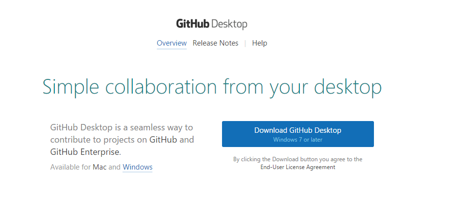
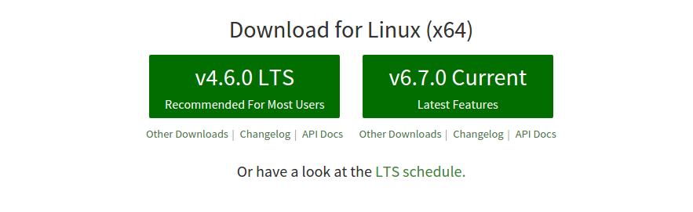
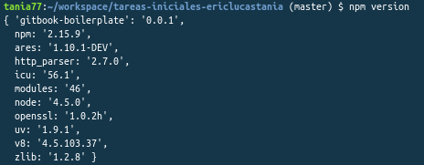
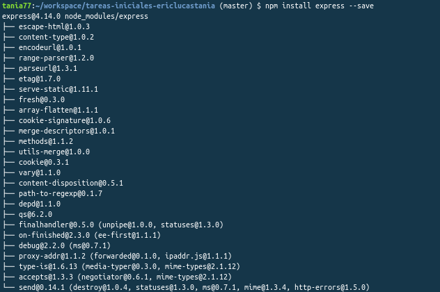

1. Gitbook

¿Qué es?
Gitbook es una herramienta que nos permite crear libros y documentos utilizando sintaxis Markdown o AsciiDoc. Estos libros una vez creados, pueden ser visualizados en web, o pueden ser exportados como e-book o pdf.
Tiene una plataforma web donde una vez identificados se puede publicar libros de forma gratuita.
Utilización
1. Creación de una cuenta en Gitbook
Para crear una cuenta en Gitbook podemos dar nuestros datos para la creación o asociarla con Github o alguna otra plataforma. Es interesante asociarla con Github para documentar proyectos ya que tendrás acceso a los distintos repositorios de tu cuenta. Pudiendo documentar así el que más te pueda interesar.
2. Creación de un libro
Una vez dentro de la página tendremos la opción de crear nuestra documentación para ello tendremos que elegir un título y un modo. Que podrá ser enlazando el contenido con Github o dejarlo en Gitbook.
Markdown 
Para el desarrollo de este documento se ha utilizado Markdown. Aquí las multiples opciones que ofrece este lenguaje.
# Encabezado h1
## Encabezado h2
### Encabezado h3
#### Encabezado h4
##### Encabezado h5
###### Encabezado h6
Citas: Para citar solo es necesario escribir una cuña antes del texto
La vida es muy corta para aprender Alemán. -Tad Marburg
Texto con énfasis: Agregar un asterisco para cursiva y dos para negrita
*énfasis* (cursiva)
**énfasis fuerte** (negrita)
Código: Se utiliza el acento grave para identificar código
`Código`
```
Código en
varias líneas
```
Listas:
* Un elemento en una lista no ordenada
* Otro elemento en una lista
1. Elemento en una lista enumerada u ordenada.
2. Otro elemento
Enlaces:
[Texto del enlace aquí](URL "Título del enlace")2. Github Desktop

Instalación
Para instalar Github APP en windows se ha accedido a la página oficial e se instaló la version de desktop que nos permite trabajar con una interfaz 
Una vez instalado el mismo podremos trabajar con los respositorios vinculados a nuestra cuenta de GitHub, así como crear, clonar los mismos y trabajar con múltiples ramas mediante una interfaz gráfica.

3. Gh-Pages
¿Qué son?
Se trata de una herramienta de Git hub que permite desplegar tu página web de manera sencilla. Simplemente creando una rama llamada "gh-pages" y empujando los archivos a ella.
¿Cómo se utilizan?
1. Crear un archivo index Dentro de github.com creamos un nuevo repositorio o vamos a uno ya existente. hacemos click en Create a new file.
2. Escribimos el contenido del archivo Debemos llamar a dicho archivo idex.html. Escribimos codigo HTML en él.
3. Escribimos el commit del archivo Bajamos hasta la parte baja de la pagina, escribimos un mensaje de commit y hacemos click en Commit new file.
4. Configuración del repositorio En la pestaña Settings vamos a la sección GitHub Pages, seleccionamos la rama master como fuente y guardamos.
5. Y hemos acabado Si escribimos en un navegador la dirección http://nombredeusuario.github.io/repositorio tendremos la pagina web de nuestro proyecto.
4. Despliegue en Gitbook

GitBook está implementando usando node.js, podemos instalarlo usando NPM:
$ npm install gitbook -g
Podemos servir un libro directamente desde un repositorio con este comando:
$ gitbook serve ./repository
Los documentos se pueden exportar como sitio web independiente incluyendo ejemplos interactivos que pueden ser alojados directamente desde GitHub Pages, PDF con la solución de los ejercicios al final del libro, ebook utilizando además un conversor, formato Single Page o JSON para extraer metadatos del documento.
Cuenta con un editor de forma experimental para Windows, Mac y Linux que facilita la escritura en GitBook.
5. NodeJS
¿Qué es?
Node es un intérprete Javascript del lado del servidor que cambia la noción de cómo debería trabajar un servidor. Su meta es permitir a un programador construir aplicaciones altamente escalables y escribir código que maneje decenas de miles de conexiones simultáneas en una sólo una máquina física.
Instalación
Para instalar NodeJS se ha accedido a la página oficial de nodeJS donde se ha encontrado dos versiones, una estable y la ultima version reciente.Se instaló la versión estable.
NPM
Es el manejdor por defecto para Node.js, un entorno de ejecucion para JavaScript. Se ejecuta desde la linea de comandos y maneja las dependencias para una aplicación, es el equivalente a gemspec de ruby. Ademas permite a los usuarios instalar aplicaciones Node.js que se encuentran en el repositorio. La sintaxis para instalar un modulo es:
$ npm install <Module Name>
Comprobación de npm
Para comprobar el que npm se ha instalado correctamente hemos ejecutado el comando : npm version. Tras la correcta ejecución del mismo damos por adecuada la intrepretación de comandos en el mismo.

Package.json
Este documento es todo lo que necesitas saber acerca de lo que requiere tu proyecto. Está escrito en JSON, no es un objeto literal de javascript. Todo lo que se describe en este documento afecta a la configuración del proyecto.
Express
Express es una infraestructura de aplicaciones web Node.js mínima y flexible que proporciona un conjunto sólido de características para las aplicaciones web y móviles.
Instalación Express
Para instalar Express se ha introducido el comando en el cmd de windows npm install express --save, se incluyela opción --save para que se guarde de forma permanente en la lista de dependencias.

Para el desarrollo de la práctica instalaremos la última versión reciente para asegurarnos la disponibilidad de sus servicios.
6. Gulp
¿Qué es Gulp?
Es una herramienta que permite automatizar tareas comunes de desarrollo.Se suele utilizar para tareas de front-end como recargar la página ,optimizar activos como CSS, JavaScript,las imágenes y un sin fin de demás tareas
Pon a prueba tus conocimientos
Recuerda!,el saber no ocupa lugar
1.¿Qué es Gitbook?
2.¿Qué es el Markdown?
3.¿Para que sirve Gulp?
4.¿Cuál de las siguientes cuestiones no es cierta respecto a Node.JS?
5.¿Cuál es el sitio idóneo para encontrar información relacionada con los modulos requeridos por el proyecto?
6.¿Qué son las gh-pages?
7.¿Cuál de los siguientes comandos se utiliza para combrobar que se ha instalado correctamente npm?
8.¿Cuál es el comando que se utiliza para instalar Gitbook?
9.El orden correcto para utilizar gh-pages es...
10.¿Qué es Express?